To access these tools, select → from the main menu.
The GIMP Toolbox includes fourteen “paint tools”. By default they are shown together in five groups, but this can be disabled in Toolbox Preferences by unchecking Use tool groups.
Figura 14.27. As ferramentas de pintura (caixa de ferramentas)
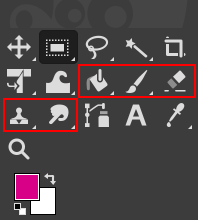
The default view groups similar tools together. The paint tools groups are inside the red square.

The paint tools in the toolbox in ungrouped view inside the red area.
apesar da noção intuitiva de “pintar” com um pincel, as ferramentas lápis, pincel, e aerógrafo são chamadas “ferramentas básicas de pintura” ou ferramentas de pintura.
As outras ferramentas usam o pincel para modificar uma imagem de alguma forma diferente do que seria pintar, propriamente dito:
-
a Ferramenta de preenchimento preenche com uma cor ou textura;
-
o Degradê preenche com degradês;
-
a Borracha apaga;
-
a Ferramenta de clonagem copia de uma textura, ou imagem;
-
a Ferramenta de restauração corrige pequenos defeitos;
-
a ferramenta de Clonagem em perspectiva copia para uma perspectiva diferente;
-
a Ferramenta de convolução desfoca ou deixa nítido;
-
a Ferramenta de borrar borra;
-
e a Ferramenta de sub/super-exposição clareia ou escurece.
As vantagens de usar o GIMP com uma mesa digitalizadora (tablet) ao invés de um mouse propriamente ficam mais claras com as ferramentas de pincel do que com qualquer outra: o ganho em controle fino é imensurável. Essas ferramentas também possuem opções especiais de “sensibilidade de pressão” que apenas são usáveis com uma mesa digitalizadora (tablet). Se você estiver corrigindo fotos, tudo bem usar o mouse. Se você for um ilustrador, considere seriamente adquirir um tablet num futuro próximo, se já não tiver um.
Além do método mais comum de “por as mãos na massa”, é possível aplicar as ferramentas de pintura de forma automatizada, criando uma seleção ou vetor e então “contorná-la”. Você pode contornar com qualquer uma das ferramentas de pintura, incluindo as ferramentas que não são padrão como a borracha, ferramenta de borrar, etc., e qualquer opção de configuração que você escolher para a ferramenta será aplicada. Veja a seção Contornar para maioresinformações.
- Ctrl
-
Pressionar a tecla Ctrl tem um efeito diferente em cada ferramenta de pintura. No caso do lápis, pincel, aerógrafo, tinta, e borracha, elas são alteradas para o modo de “seleção de cores”, que ao se clicar em um pixel da imagem faz com que a cor se torne a cor de frente do GIMP para a cor da camada ativa naquele ponto (ou, para a borracha, a cor de fundo do GIMP). Para a ferramenta de clonagem, a tecla Ctrl muda para um modo em que clicar define o ponto de referência para a cópia. Para a ferramenta de convolução, a tecla Ctrl muda os modos entre borrar e tornar nítido; para a ferramenta de sub/super-exposição, ela muda entre sub-expor e super-expor.
- Shift
-
Pressionar a tecla Shift possui o mesmo efeito na maioria das ferramentas de pintura: ela coloca a ferramenta no modo de linha reta. Para criar uma linha reta com uma das ferramentas de pintura, primeiro clique no ponto de inicio, e então pressione a tecla Shift. Enquanto você pressioná-la, verá uma fina linha conectando o ponto clicado anteriormente com o local atual do ponteiro. Se clicar novamente, enquanto continua a pressionar a tecla Shift, uma linha reta será desenhada. Você pode continuar esse processo para criar uma série de segmentos de linhas conectadas.
- Ctrl+Shift
-
Pressionar ambas as teclas coloca a ferramenta no modo de linha reta forçada. Isso é similar ao efeito da tecla Shift pressionada sozinha; exceto que a orientação da linha é forçada a ao ângulos mais próximo que seja múltiplo de 15 graus. Use isso se deseja criar linhas perfeitamente horizontais, verticais ou diagonais.
Muitas opções da ferramenta são compartilhadas por diversas ferramentas de pintura: elas estão descritas aqui. Opções que se aplicam apenas a uma ferramenta específica, ou a um pequeno número de ferramentas, estão descritas nas seções dedicadas a essas ferramentas.
- Modo
-
A lista de seleção de modo mostra uma seleção de modos de aplicação de pintura. Assim como a opacidade, a maneira mais fácil de entender o que a configuração de modo faz é imaginar que o efeito é aplicado a uma camada acima da camada na qual você está trabalhando, com o modo de combinação de camadas igual ao modo selecionado. Pode-se obter uma grande variedade de efeitos especiais dessa forma. Utiliza-se a opção de modo apenas para ferramentas que podem adicionar cores à imagem: o lápis, pincel, aerógrafo, tinta, e ferramentas de clonagem. Para as outras ferramentas de pintura, a opção aparece por causa da consistência, mas está sempre desativada. Uma lista de modos podem ser encontrados em Seção 2, “Modos de Camada”.
Nessa lista, alguns dos modos são específicos e são descritos abaixo.
- Opacidade
-
O seletor de opacidade define o nível de transparência para a operação do pincel. Para entender como isso funciona, imagine que ao invés de alterar a camada ativa, a ferramenta cria uma camada de transparência acima da camada ativa e atua nessa camada. Alterar a opacidade no opções da ferramenta possui o mesmo efeito que alterar a opacidade na janela de camadas na situação citada anteriormente. Ela controla a “intensidade” de todas as ferramentas de pintura, não apenas aquelas desenham na camada ativa. No caso da borracha, isso pode ser um pouco confuso: como a opacidade determina a força da ferramenta, acontece que quanto maior a “opacidade”, maior é a transparência que você obtém.
- Pincel
-
O pincel determina o quanto da imagem é afetada pela ferramenta, e como ela é afetada, quando você traça uma pincelada com o ponteiro. O GIMP permite usar diversos tipos de pincéis, que são descritos na seção Pincel. As mesmas opções de pincel estão disponíveis para todas as ferramentas de pintura exceto a ferramenta de tinta, que usa um tipo único de pincel gerado pelo programa. As cores do pincel apenas aparecem em ferramentas em que fazem sentido: nas ferramentas de lápis, pincel, e aerógrafo. Para outras ferramentas de pintura, apenas a distribuição de intensidade de um pincel é relevante.
- Tamanho
-
Essa opção permite modificar precisamente o tamanho de um pincel. Você pode usar as teclas “[” e “]” para variar o tamanho do pincel em mais ou menos 1 pixel, mesmo estando com a imagem em foco. Se você clicar nesse controle, pode usar as teclas Page-Up e Page-Down para variar entre + e - 10,00. Você pode obter o mesmo resultado se você definir corretamente a rodinha do mouse nas preferências. Veja Como alterar o tamanho do pincel
- Proporção
-
Isso determina a proporção entre a altura e largura do pincel. O seletor varia de -20,00 até 20,00 com o valor padrão definido em 0,00. Um valor negativo de 0,00 a -20 irá estreitar a altura do pincel enquanto que valores positivos entre 0,00 e 20,00 indicam uma taxa de estreitamento da largura do pincel.
- Ângulo
-
Essa opção faz o pincel girar sobre seu próprio centro. O efeito não será perceptível se o pincel for circular.
- Espaçamento
-
Esta opção define a distância entre as marcas do pincel em um traço.
- Dureza
-
Modifica o tamanho do centro firme do pincel.
- Força
-
Modifies the “gain” of the brush: gain is a secondary Opacity multiplier that can increase or decrease the strength of the brush during its operation (distinct from the Opacity setting, which is applied to the operation as a whole). Force values below 50% reduce the brush's effect relative to its preview shown in the Tool Options; values above 50% increase the effect (up to 2x at Force=100%) instead.
For standard brush types (i.e. parametric brushes created by the Brush Editor), Force values above 50% effectively expand the opaque center of that brush similar to (but more subtle than) increasing the Hardness of that brush. (The exact relationship between Force and Hardness in this case is complicated.)
For other (raster or image based) brush types, Force values above 50% may show little to no effect depending on the specific brush used, as these brushes often contain maximum opacity to begin with (which cannot be increased further, only decreased).
- Dinâmicas
-
Dinâmicas de pincel permitem mapear diferentes parâmetros de pincel para diversas dinâmicas de saída. Elas são muito usadas com mesas digitalizadoras gráficas (tablets), mas algumas delas também podem ser usadas com o mouse.
Você pode ler mais sobre dinâmicas em Dinâmicas
Ao contornar vetores e seleções usando a opção de ferramenta de pintura existe uma opção para selecionar “Emular dinâmicas de pincel”. Que significa que ao aplicar o contorno, a pressão do pincel e a velocidade irão variar ao longo do comprimento da pincelada. A pressão começa em zero, e sobe à pressão máxima e então desce novamente até não ter nenhuma pressão. A velocidade começa do zero e aumenta até a velocidade máxima até o fim da pincelada.
- Opções de dinâmicas
-
Essas opções são descritas em Opções de dinâmicas
- Aplicar espalhamento
-
Você conhece o “espaçamento” em pinceladas: as pinceladas são produzidas a partir de marcas sucessivas do pincel que, por estarem muito próximas, se parecem com uma linha continua. Aqui, ao invés das marcas de pincéis estarem alinhadas na pincelada, elas ficam espalhadas, próximas do traço. Você pode definir a distância do espalhamento com o seletor de .
Figura 14.32. Exemplo de “espalhamento”

De cima para baixo: sem espalhamento, espalhamento = 1, espalhamento = 4.
O espalhamento também está disponível no editor de dinâmicas de pintura, onde você pode vincular a quantidade de espalhamento a vários fatores durante a pintura, como velocidade, direção e pressão, entre outros.
- Pincelada suave
-
Essa opção não afeta a representação da pincelada mas sua “forma”. Ela altera as oscilações da linha que você está desenhando, o que torna desenhar com um mouse mais fácil.
Quando essa opção está marcada, duas áreas de configuração aparecem, Qualidade e Peso. Você pode alterar os valores padrão para adaptá-los a sua habilidade.
Um valor alto para o peso torna a pincelada mais firme.
Tabela 14.2. Exemplo de “pincelada suave”
Exemplo de “pincelada suave”
Linha reta
Sine curve
Unchecked 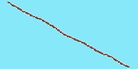

Default 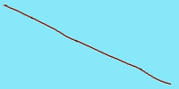
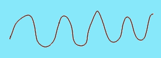
Maximum 
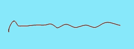
- O tamanho do pincel - curva de esmaecimento
-
Quando você está trabalhando em uma imagem que é maior (em pixels) do que sua tela, você precisa dar muito zoom in e zoom out. Esta opção permite um processo de "refinamento iterativo" muito natural, sem necessidade de pedir repetidamente ao aplicativo para alterar o tamanho do pincel conforme você vai entre traços largos e detalhamento.
Se o tamanho do pincel for relativo à tela da imagem (opção desmarcada), dar zoom in também dá zoom no pincel e ele fica maior (ocupa mais pixels na tela). Se você estiver trabalhando com um pincel de 300 pixels de raio e der zoom de 12% para 100%, o pincel agora é metade do tamanho da sua tela! Então você precisa encolher o pincel de volta.
Se o tamanho do pincel for relativo à tela (opção marcada), então quando você der zoom, o tamanho do pincel exibido não muda, ele fica menor e assim você pode trabalhar em detalhes minúsculos.
Figura 14.33. Exemplo de “pincelada suave”
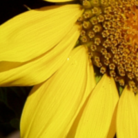
An image displayed at 50% zoom so the whole image is visible. The “Lock brush to view” option is not checked and the brush size is set to 100 pixels high in the toolbox.
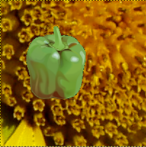
Part of the image at 200% zoom. The “Lock brush to view” option is not checked and the brush size is set to 100 pixels high in the toolbox. We paint with the pencil and the brush stroke of the selected pepper brush is displayed as 200 pixels high due to the zoom.
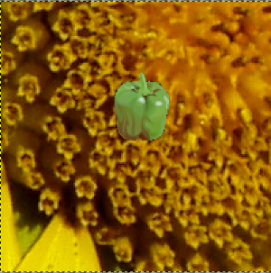
Part of the image at 200% zoom. The “Lock brush to view” option is checked and the brush size is set to 100 pixels high in the toolbox. We paint with the pencil and the brush stroke of the selected pepper brush is displayed as 100 pixels high due to the setting.
"Travar pincel na visualização" também pode ser usado para travar o pincel na rotação da visualização:
Figura 14.34. Exemplo de travar pincel na rotação da visualização
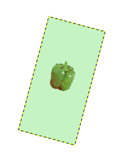
The “Lock brush to view” option is checked and we rotate the view 15° clockwise. The brush stroke rotates with the view.

The “Lock brush to view” option is not checked and we rotate the view 15° clockwise. The brush stroke does not rotate with the view.
- Incremental
-
Aplica o efeito incrementalmente à medida que o ponteiro do mouse se move.
A caixa de seleção Incremental parece não funcionar como todos esperam. Quando desativada (valor padrão) o efeito máximo de uma simples pincelada é determinado pela opacidade definida no seletor de opacidade. Se a opacidade é definida para menos que 100, mover o pincel sobre o mesmo ponto aumentará a opacidade caso o pincel seja levantado durante o movimento. Desenhar com a mesma força não possui tal efeito. Caso o Incremental esteja ativo, o pincel poderá pintar com opacidade total independente da configuração do seletor, bastando passar várias vezes o pincel no mesmo ponto. Essa opção está disponível para todas as ferramentas de pintura, exceto aquelas que possuem um controlador de “taxa”, que implica automaticamente no efeito incremental. Veja também Seção 2, “Modos de Camada”.
- Expand Layers
-
When enabled, this automatically enlarges the layer when painting outside the borders of the layer. If it is enabled, several additional settings appear below it.
Note that this doesn't allow you to extend a layer beyond the size of the image canvas. To change the size of the canvas see Canvas Size.
- Amount
-
The amount of pixels to add in the direction you are painting.
- Preenchido com textura
-
Here you can select how the new expanded area of the layer is filled. These are the same choices as in the New Layer Dialog.
- Fill Layer Mask With
-
If the layer you are painting on has a layer mask, that mask will also be extended. This option gives you a choice how to fill the new area of the layer mask. You have a choice between White (full opacity) and Black (full transparency).


Os seguintes exemplos demonstram algum dos modos de pintura do GIMP:
- Dissolver
-
Figura 14.35. Exemplo do modo dissolver

Duas pinceladas criadas com o aerógrafo, usando o mesmo pincel circular ondulado. Esquerda: modo normal. Direita: Modo dissolver
Para qualquer ferramenta de pintura com opacidade abaixo de 100%, esse modo muito útil não desenha transparência, mas usa o valor de transparência para determinar a possibilidade de aplicar a pintura em cada pixel. Isso pode gerar ótimas texturas de pontos para pinceladas ou preenchimento.
Figura 14.36. Pintando no modo dissolver

Essa imagem possui apenas a camada de fundo e nenhum canal alfa. A cor de fundo é a sky blue (céu azul). Três pinceladas com o lápis e várias opacidades: 100%, 50%, 25%. Pixels na cor de frente ficam espalhados ao longo da pincelada.
- Atrás
-
Figura 14.37. Exemplo de modo de camada “Atrás”

O Wilber atrás de uma camada de fundo azul

Diálogos de camada
Preenchido com textura
Esse modo aplica pintura apenas nas áreas transparentes da camada: quando menor a opacidade, mais tinta é aplicada. Inclusive, pintar áreas opacas não gera efeito nenhum; pintar áreas transparentes têm o mesmo efeito que no modo normal. O resultado é sempre um aumento na opacidade. Claro que nenhum desses casos tem qualquer resultado em uma camada que não possua um canal alfa.
Na imagem de exemplo acima, o Wilber está na camada mais alta, cercado de transparência. A camada mais baixa é um azul claro sólido. A ferramenta de preenchimento foi usada, com a opção de Preencher toda a seleção marcada e com toda a camada selecionada. Uma textura foi usada para pintar com a ferramenta de preenchimento.
Figura 14.38. Pintando no modo “Atrás”
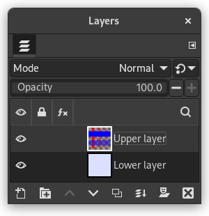
A próxima imagem (abaixo) possui duas camadas. A camada superior está ativa. Três pinceladas com o lápis, na cor vermelha em 100%, 50% ou 25%: apenas os pixels transparentes ou semi-transparentes da camada são afetados.
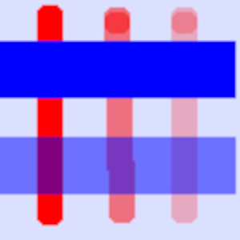
Resulting image.
- Apagar cor
-
Figura 14.39. Exemplo do modo de camada “Apagar cor”
O Wilber atrás de uma camada de fundo azul

Cor de frente branca apagada
Este modo apaga a cor de frente, substituindo-a com um transparente parcial. Esse modo age como o filtro Cor para alfa, aplicado a uma área sob a pincelada. Perceba que isso apenas funciona em camadas que possuem um canal alfa; caso contrário, esse modo funcionará da mesma forma que o Normal.
No exemplo de imagem acima, a cor da ferramenta de preenchimento era branco, com isso partes brancas do Wilber foram apagadas e o fundo azul ficou a mostra.
Essa imagem abaixo possui apenas uma camada, a camada de fundo. A cor de fundo é de céu azul. Três pinceladas com o lápis:
-
Com a mesma cor da área azul: apenas esse tom de azul é apagado.
-
Com a mesma cor da área vermelha. Apenas esse tom de vermelho é apagado, independente da transparência. Áreas apagadas ficam transparentes.
-
Com a cor de céu azul da camada de fundo: apenas essa cor é apagada.
Figura 14.40. Pintando no modo “Apagar cor”

Vertical brush strokes painted in blue (on the left), in red (in the middle), in the background color (on the right).
-
- Overwrite
-
Figura 14.41. Pintando no modo “Atrás”

Example image with two layers: the upper layer contains a blue gradient with different brushstrokes painted across them, in Normal mode (top) and Overwrite mode (middle, bottom).
This mode entirely foregoes the usual concept of opacity and instead treats it as simply another “color” channel to be painted: uniquely, it can replace fully opaque areas with semi-transparent colors.
When used with the Pencil tool (or a tool with the “Hard Edge” toggle enabled), Overwrite will effectively ignore any pre-existing content under the brushstroke. It can similarly be used to paint a selected region with a Pattern or Gradient fill without regard for (or blending with) previous content.
In the above example, the image has a patterned background layer, with a blue gradient layer above it. The topmost red stroke is drawn with the Paintbrush tool at 25% Tool Opacity and Normal mode, which blends with the blue gradient to yield a purple result.
The lower two strokes are also drawn wih 25% Tool Opacity, but in Overwrite mode instead: they “cut through” the blue gradient in its entirety and allow the background pattern to be visible through their transparency alone, even in regions where the gradient is fully opaque.
Usuários avançados podem estar interessados em saber que as ferramentas de pintura na verdade operam no nível de sub-pixel, com a finalidade de evitar resultados com aparência serrilhada. Uma das consequências disso é que mesmo que você esteja trabalhando com um pincel de bordas duras, como um dos pincéis de círculo, os pixels da borda da pincelada serão afetados apenas parcialmente. Se você precisa de efeitos de tudo ou nada (que podem ser necessários para obter uma boa seleção, ou para cortar e colar, ou para trabalhar num nível de zoom alto o bastante para trabalhar em pixel por pixel), use a ferramenta de lápis, que faz com que todos os pincéis sejam completamente duros e desabilita o anti-serrilhamento em sub-pixel.